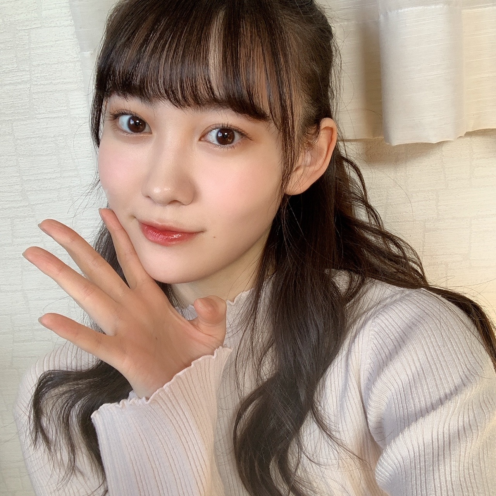
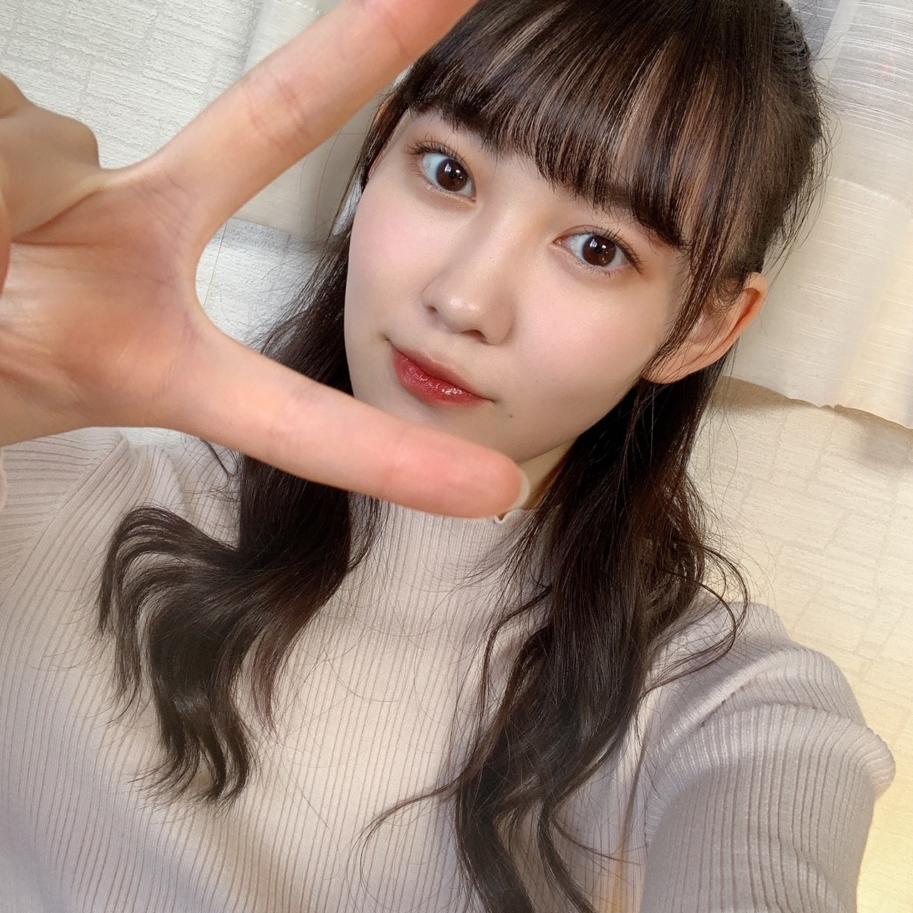
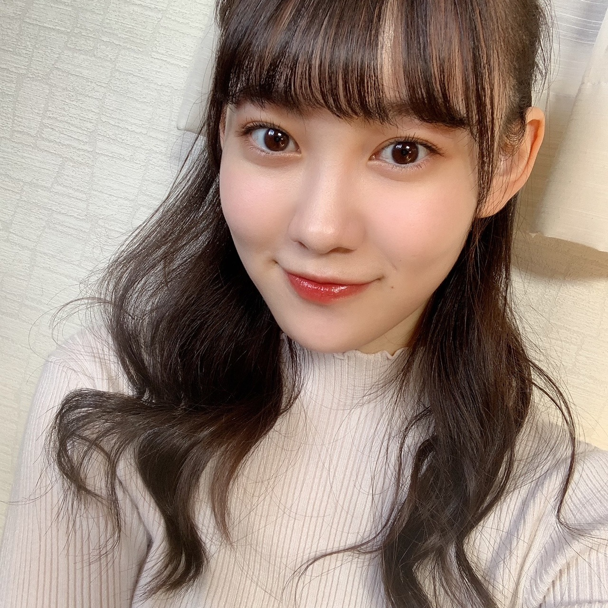

2020/1201Tue12！！ 松尾美佑
今日から12月がスタートしました！
太陽がご機嫌でルンルン気分です♪
そして12月スタートという事は同時にアドベントカレンダーもスタートしましたっ！
クリスマスまでの25日間、毎朝チョコを楽しみに寒くても早起き頑張ります☺︎
今日のチョコは甘いミルクでした
はい！
千葉県出身、高校2年生
16歳でいられるのもあと１ヶ月と2日！
松尾美佑です
まずは〜
昨日はのぎおびありがとうございました！
初めて2人でのぎおびをしました
まゆちゃんとね⸜❤︎⸝
ふふん(๑ت๑)
4期ライブに向けての発表、第一弾として！
昨日はユニットのメンバーを発表しました〜
似顔絵、似てましたかね？
レイちゃんが私が書いたレイちゃんの似顔絵を可愛いって喜んでくれていた様子です。
自信作だったので嬉しいです
今日は黒見ちゃん＆瑠奈ちゃん！
4期生ライブまでまだあと4つの発表があるので、みんなののぎおび見てくださいね¨̮
わくわくドキドキ(⸝⸝⍢⸝⸝)

はーふあっぷ
そして、
堀未央奈さんがご卒業を発表されました
新4期生が加入したばかりの時から近くに来てくださって優しさを分けてくださって、
AbemaTVさんでの白石さんクイズの時に御一緒させて頂いた時も、気さくに話しかけて下さったり笑顔を頂いて本当に嬉しかったです。
堀さんのアイドルとしての輝きも、
好きを発信出来る所も、
芯のある言葉も、
尊敬と憧れが沢山です。
堀さんのファッションもヘアアレンジもいつも大好きです！
ご卒業される日まで一緒に過ごせる時間を大切にします！！
そして！
昨日、11月30日！
伊藤純奈さん、お誕生日おめでとうございます！
純奈さんの歌声を初めて自分の耳で直接聴いた日から、純奈さんの歌声の美しさに惚れて大好きです！
純奈さんを見かける度にいつもキラキラとした笑顔をしていらっしゃって、優しい空気を纏っていて、お話出来たら嬉しいなといつも思っています！
素敵な一年になりますように願っています！

大きなぴーーーす
お返事〜
✽ 最近見た夢ってなに？
洗面所で自分で髪の毛を肩まで適当に切っちゃって
"あ...。"
"そのうち伸びるか！！！"
っていう夢を今日見て起きた時焦りました。
✽ 無事任務を終えた2020年の11月さんに一言。
ご苦労様でした、ゆっくり休んでくださいね
✽ 私もタンブリング出来るんだけど、バク転よりロンバクの方が楽な気がするの私だけ？みゆちゃんもですか？？
全力でそれなです！！！
ロンバクは勢いがあるからですかね
✽ ドラえもんの道具でなにが1番欲しいですか？
スモールライト！
自分を小さくしてドールハウスで暮らす
✽ 期末試験への意気込みを聞かせてください。
後悔しないように頑張る
って友達が言ってて良い言葉だ。って思いました。
私からは、
どーにかなる！！！！！
を差し上げます。
(まともな話をすると、テスト返しの時を想像して自分がにっこりできたらいいなと思うとがんばれます)
(あ、意気込みか)
(どーにかなる！！)
✽ 好きなおにぎりの具は何ですか？
ミュウランドの主食は
エビマヨおにぎりとたこ焼きおにぎりらしいという噂を耳にしましたよ |ᯅ̈ )
聞いてください聞いてください。
次の私のブログの日はついに4期生ライブの当日らしいですよ皆さん。
どきどきどきどきˊᵕˋ
楽しみです！
明日は〜
なお〜〜〜〜〜〜
まゆちゃんの書いたなお〜の似顔絵ほんとにそっくりだった(*¨*)♡
それでは！
4期生ライブで会いましょ〜
ミュウでした¨̮

同じ日の写真ばっかりですみません( ´∵｀)
ばいっっっっっっっ( Ꙭ )/''
コメント(192)
ってか今日から１２月で、２０２０年も今月の３０日間しかなくなっちゃったよぉ～_(:3 」∠)_
今年も新４期ちゃん５人にとっては、めっちゃいろんな事がバタバタと舞い込んできて嬉しい悲鳴が毎日のようにあったかもしれないけど、２０２０年はまだ終わりじゃないぞぉ～ヽ(^o^)丿
２０２０年の終わりは、乃木メン達と「一緒にジャンプ」して終わるんでしょ？(￣ー￣)ﾆﾔﾘ それまで、お預けだぞぉ～♪
ってか今日のミュウ(>o<)ちゃんはハーフアップにしちゃってぇ～(*ﾉωﾉ)めっちゃカワイイやないかぁ～い(=ﾟωﾟ)ﾉ （ノギスキＡＣＴ２での「東尼崎姉妹。奈於ちゃん」のマネ(笑)）
そして、ピースの写真もあったけど本当にそれ。
「ピースの角度は４６度？」(笑)( *´艸｀)
（なんでも、ノギザカスキッツのネタにしたがる(笑)( *´艸｀)）
そして、次回のミュウ(>ｏ<)ちゃんのリレー形式ブログは、４期ちゃんＬＩＶＥ当日だねぇ～。思いっきり楽しめる前後だけど、思った以上にバタバタになるかもしれないから、無理しない程度に本番で思う存分楽しめるようにしてね☆彡ブログでもＬＩＶＥ本番のテンションで書くと、終わった後「何か書いてんだ？私・・・・・(・ω・)」って自分自身に冷めちゃうぞぉ～(笑)( *´艸｀)
のぎおび配信も、４期ちゃん主体で２人ずつ２週にわたりやってるみたいだけど、毎日のように時間が合わずみれてな～い(´；ω；`)ｳｩｩ 先週分。丸々みれてな～い( ﾉД`)ｼｸｼｸ… だから、録画したった(笑)ヽ(^o^)丿
それじゃあ、ミュウ(>ｏ<)ちゃんも今週は最終リハ等々でバッタバタな１週間になるかもだけど、しっかりと体を休める時は休んで、楽しむときは楽しんでね。
中途半端に楽しむと、不完全燃焼になっちゃうぞぉ～ヽ(^o^)丿
それじゃあ、次のブログもめっちゃ楽しみにしてるねぇ～♪また5日後に会おうね☆彡
明日も一日！一緒にお家時間を楽しもうね♪大好きだよ♪ミュウ(>ｏ<)ちゃん☆彡
（かれこれ新４期ちゃんとも丸々２年（もうすぐ）。僕も一緒に歩みを続けてるけど、毎日笑顔でいる事が一番良いよ。特にミュウ(>ｏ<)ちゃんも「まだまだ知らないことだらけの乃木坂学園２年生」なんだからぁ～(笑)( *´艸｀)沢山の物事を学べるのはまだまだこれからだよ☆彡）
目には見えないけど画面の向こうでサイリウム振ってるからねー。
そしてミーグリもついに来ましたね(^^)
楽しみにしてます！
質問ですが、使用してるメイク用品教えてほしいです！
ライブ頑張ってください！画面外から応援します！
小さなフェイス
かわいいっ♪
わからない人もいましたが。
でも、スマイルスマイル。
(^-^)
今日の写真のメイク、いつもとちょっと雰囲気違う？？
大人っぽくてきれい！
のぎおびありがとうね
楽しかったよ！
メンバーの似顔絵かわいかった！！
まゆ＆みゆ、仲よし美人姉妹！って感じだった^^
ミーグリ決まったね！
美佑ちゃんとたくさん話したい！
ライブのユニットも、楽しみにしてるね！
のぎおび可愛いかったー
白飛びしてても可愛いかったー
のぎおび真っ白だったねっ笑
似顔絵もめっちゃかわいかった〜(＊´ ∨｀)
4期ライブたのしみすぎるーーー！！！
家から声援送るよーー(*｣´□`)｣
今日の写真のメイク、いつもと違うよね？目がキリッとしてて大人っぽく見える〜！
また書くよ〜 またねーヾ(｡･∀･｡)
最近良い天気が続くね♫
もう12月か〜、あっという間だね。
もうすぐ4期生ライブだね！！
成功するように今から祈っておく(*^^*)
はーふあっぷ可愛い(*´-`)
個人的に1番好きな髪型！！
5日後のブログ更新も楽しみに待ってる(^^)
体調に気をつけてお仕事頑張ってね！！
テストへの意気込みが豪胆やな(笑)
新しい月でリフレッシュ大事ね！
のぎおびフレッシュ感でしたよ！
似顔絵も可愛いらしかったです♪
はーふあっぷにウキウキしますし、
堀さんへの言葉も嬉しくなります✨
純奈さんもとっても元気ですよね！
大きなぴーすでも元気貰えました✌
タンブリングも楽しみにしてます！
ライブ当日ブログもワクワクです☆
ライブも期末試験もファイトですよ～☺
今週はテスト期間であんまりのぎおび見れてないんだよね〜ごめん！途中までは見たんだけどやっぱり勉強しなくちゃいけなくて…しかも今週末は部活の新人戦！休みがない。
美佑、応援してくれる？ 応援してくれてると信じて頑張ります！笑
んじゃまた！
おります。
どのような内容なのか。
好きあらば黒見さんに
ﾎﾞｰｲのﾋﾞｰﾌﾞﾙｰをふって
みてください。
ライブの感想をミュウさん
から一番早く聞けるんで
すね。
どんな事を話してくれる
のか楽しみにしています。
質問してみようかな。
ミュウランドの近くに
ミュウシーはありますか？
西の方には
USミュウはありますか？
ミュ士急ハイランドは
お化け屋敷はこわいですか？
ミュミュマリンスタジアム
は風が強いですか？
ライブ楽しみにしています。
なんだろだんだん美人になっていってる気がする。
気のせいじゃないはず。
乃木坂の歌で1番最初に聞いた歌ってなんですか？？
中学生の女子です！
初めてコメント書かせてもらいます！♡
昨日ののぎおび見ました！
まゆたんとみゆちゃん、2人とも最近気になっていたので、すごい嬉しかったし、楽しかったです！
みゆちゃんの絵、うまかったよ〜！
4期生ライブ、頑張ってね！！
未央奈ちゃんの卒業、寂しいね…
残された時間を全力で楽しんでください！
新4期のみんなはメンバーのお誕生日をブログの中でお祝いしてくれて、いつも私まで心があったかくなってます♡
ハーフアップ似合うなぁ。
ライブの髪型はもう決めた??
ハーフアップなら最高だね笑笑
ユニット曲も楽しみにしてます。
またね！
好きなおにぎりの具はめんたいこ笑笑
4期生ライブ楽しみ〜！！あと1週間で期末だけど関係ないよね、、笑笑今からめっちゃ楽しみです！！はやく見たい〜！
今日から12月だねー！もう2020年も終わるよ。。コロナがあったせいでなんかすごく一瞬ですぎていった感じします、、12月はクリスマスあって楽しみだけど持久走が始まることだけがほんとに嫌笑笑
あとミーグリも開催されるねー！みゆちゃんの絶対とるね！！今からすごく楽しみです！何話すか考えときます。。
またブログまってるねーー！
４期生ライブ、頑張ってください！
きなこ、元気ですか？
会いたいです。。。
ありがとう
喜章（よしあき
）
もう週末はライブだね…
楽しみすぎますが、夜は眠れてます(笑)
レイちゃん、くろみんとのユニットもめっちゃ楽しみー！！
何歌うのかな…ワクワクしとります！！
ミュウちゃん書く似顔絵、なんか好き(笑)
シンプルなんだけど、可愛い！
(全部当てられたとは言ってない笑)
それじゃ次はライブの日だね！！
気負わず、楽しんでくださいね。
楽しんでる姿こそ、ファンが観たい姿です。
それじゃまたね！
くまくまでしたっ！
昨日ののぎおび見たよ～ まゆみゆコンピ最高だったよ！美佑ちゃんの絵かわいかったよ 笑 くろみんとレイちゃんと美佑ちゃんのユニットの絵、美佑ちゃんだけ頬赤くなかったね 笑
この三人のユニットはかわいい系だと思うなー 笑顔が素敵な三人だからね！
もう、十二月か～ はやーい そして次のブログの時がライヴの日なんだね なんかこっちが緊張してきた～ ユニットパートめちゃくちゃ楽しみしてるよ！
さっきまでくろみんと林ののぎおび見てたよ～ ステージ構成が発表されてたよ 乃木ルーム楽しみだなー
ライブで美佑ちゃんのアクロバットは見られるのかなー？
今度のブログでは四期生ライブの裏話とかリハのこと聞きたいなー
しっかり、予定開けといたから全力でライブ見るね！
練習頑張れ！
のぎおび罰ゲームあるかもしれないね 笑
のぎおび観ましたよ~。楽しかったです。どちら僕の推しだったので、幸せな時間でした
あっ、４期生ライブのチケットやっと買えました！！12月6日が待ち遠しい。テスト週間ですけれど、気にせずに観ます笑 そして、元気をもらいます
ユニット曲も楽しみにしてます！！
(ゆんちゃんセンターの制服のマネキンあるのかな？)
See you again !!
絵上手かったです。
真夏のドリームくじで、みゆさんのベースボールシャツが当選しました！
ありがとうございます！
大事にしますね。
4期生ライブ楽しみにしています！
今年も12月になりました。そろそろ来年の手帳を発注しなきゃです。
4期生ライブまであと5日、レッスンやリハで忙しい毎日だと思います。コロナが拡大中の上に、インフルエンザの季節でもあります。お互いに感染防止に努めたいですね。
今年のクリスマスのチキンはどうしよう？ケンタに7-11に、あと近所に美味しい唐揚げ屋さんができたので、迷っております。
ではまた。
なんとかなる！
なんとかするんだ！
ありがと！ミュウ！
ちゅきだよ！ちゅっ
来年にはミュウちゃんが初めて乃木坂で迎える誕生日をお祝い出来ます♪
『のぎおび』似顔絵が思いの外特徴を捉えていました。ユニットを予想しながらライブへの機運も高まるばかり。
みおなと過ごせる時間を締めつつ心置きなく送り出せます様に。
スモールライトで小さくなってドールハウスで暮らすのは夢が溢れますね♪
たこ焼きおにぎりは初耳。ミュウランドで探してみます。
前からやねんけど、
最近どんどんミュウちゃんが気になってるねん。
どうしたらいい？？
のぎおび見たよ(o^-')b
みゆまゆコンビとってもかわいくてスクショが捗りました♪
4期ライブでのユニットも楽しみだねo(^-^o)(o^-^)o
くろみんとレイちゃんと3人で何歌うのかな。。。予想はいろいろあるけど、ここは大きな願望を込めて「環状六号線」を期待してみる♪
はたして当たってるどうかわくわくしながら見てるね(n*´ω`*n)
26thシングルの個別オンラインミート＆グリート決まったね♪
やっとミュウちゃんに自分の声で気持ちが伝えられるヾ(≧▽≦)ﾉ
短い時間でも楽しくおしゃべりできたらいいな♪
それじゃまたねー＼(*⌒0⌒)b
もう12月なんて早すぎるよね
あっという間にお正月だ
17歳になるの楽しみ?
のぎおびお疲れ様でした
楽しい時間だったよ
ありがとう
似顔絵似てたよ
特にさくちゃんすぐにわかった
ミュウちゃんのユニットはもちろん
どのユニットも楽しみ
写真いつもとメーク違う?
いつもより大人っぽく見える
めっちゃ素敵です
やっぱり卒業には慣れないね
寂しい
卒業までたくさん一緒に過ごせるといいね
純奈さんお誕生日おめでとう
素敵な1年を過ごせますように
6日はミュウちゃんのブログに4期生ライブ最高の日だめっちゃ楽しみ
4期生ライブ頑張ってね
ではまたね
ばいばい
4期生ライブ見るよ
ハーフアップめちゃめちゃ可愛い………すっっっごい似合ってる…！！やっぱり緩く巻いてるのすごい好きだなぁ〜♡本当に可愛い、、、今日も可愛いお写真ありがとう〜！
まゆちゃんとのshowroom楽しすぎたよ〜(*´꒳`*) 美佑ちゃんの絵のタッチがやっぱり好きだなぁって改めて思いました
4期生ライブでのユニットも楽しみにしてるね♡ 美佑ちゃんがたくさん楽しめますように
ミーグリの日程発表されてようやく会えるの本当に嬉しくて泣きそうになったよ（ ; ; ） 早く会って色んなお話したいな〜☺︎ 本当に楽しみ！！！
☆美佑ちゃんは記憶力いい方ですか？
☆クリスマスコフレ何かゲットした〜☺︎？
☆最近寒すぎて朝起きるの苦労してるんだけど、パッて起きれる方法あるかなぁ笑？
4期生ライブで美佑ちゃんがキラキラ輝いてるところしっかり見届けます♡
体調には気をつけてね〜 また5日後に笑顔で会おうね☺︎
またねっ( Ꙭ )/''
もう12月なんて早すぎるよね
あっという間にお正月だ
17歳になるの楽しみ?
のぎおびお疲れ様でした
楽しい時間だったよ
ありがとう
似顔絵似てたよ
特にさくちゃんすぐにわかった
ミュウちゃんのユニットはもちろん
どのユニットも楽しみ
写真いつもとメーク違う?
いつもより大人っぽく見える
めっちゃ素敵です
やっぱり卒業には慣れないね
寂しい
卒業までたくさん一緒に過ごせるといいね
純奈さんお誕生日おめでとう
素敵な1年を過ごせますように
6日はミュウちゃんのブログに4期生ライブ最高の日だめっちゃ楽しみ
4期生ライブ頑張ってね
ではまたね
ばいばい
4期は総じて雨後の筍ようにエナジェティックな1期を思い起こさせるような期だから、ミュウちゃんもそん中に溶け込める元氣いっぱいキャラだと判明して本当に良かった、良かった
もう四半世紀も前から時代は「強い」とか「正しい」よりか「楽しい」方が勝ち（価値ある）と認識されだし、アイドルもトークやバラエティーいけてなんぼんなってきてるでやんす〜
とはいえ、変化球は直球がきれててこそ活きるように、やっぱ軸はパフォーマンスafter allなんで、ミュウちゃんの高い身体能力が活かされるであろう5日後のライブがマ楽しみや
堀未央奈さんと素敵な時間を過ごせるよう祈っていますね。
色々な髪型にチャレンジして下さりありがとうございます！
4期生ライブめっちゃ楽しみにしてるから、いいパフォーマンス期待してます！そして、ミーグリ！応募してみるつもりなのでよろしくねー！
5日ぶりのこんばんは
昨日ののぎおび見ましたよ
何となくだけど、まゆちゃんを隣に少し緊張
してた様にも思えたけど如何なんだろう。
あとまゆちゃんと並んでも全く歳の差を
感じさせないね、まゆちゃんが若く見えるのか
お松が大人っぽいのかどっちなんだろうね。
そして4期Liveの5つのサプライズ楽しみだね
そのサプライズ第一弾！
メンバーのユニット曲披露、それは楽しみだね
お松はレイちゃん黒見ちゃん3人のユニット
何歌うか楽しみだね！
で、そのユニットメンの似顔絵が特徴を
掴んでてセンス良いね！
是非何かのグッズ展開もありだと思うよ。
もう今はリハの最
今日から12月寒さも厳しくなるみたいだから
体調には気をつけてリハそしてLive頑張れ〜
ターコイズ＆白のサイリューム用意しています。
次のブログはLive当日だね
またLiveの感想など楽しみに待ってます。
頑張れ！ ミュウ
『 When Miu smiles, it chains to us.』
ファンからの宿題です。
伊藤純奈さんに直接お誕生日おめでとうございます。とお祝いの言葉を
瑠奈ちゃんのブログに書かれてた。まいやん卒業コンサートのリハーサルの時、純奈さんが4期生を応援していた事の感謝の言葉の2つを伝えてください。
ファンからの宿題(きっかけ)です。(偉そうでごめんなさいね。)
じゃ、またね。
みゆた〜ん♪
12月になりましたねー！今月は1と6の日だね！
昨日のるなちゃんのブログ見ましたか？？
焼き飯と膀胱瘻のセットはキツいらしいですw いったいなんの誤字だろう？回鍋肉？？
次回の更新の時は4期生ライブの時だ！頑張ってね！！
ブログ更新ありがとう！次回も楽しみにしてます！
では！バイジョーじ！
ライブ&ブログ、楽しみにしています！
GO!GO!ミュ～(*^-^)／＼(*^-^*)／＼(^-^*)
今日は夜10時くらいまで残業してたんだけど、集中するためにだいちゃりもガーナのミルクチョコを食べてたよ〜！いやぁ、やっぱ糖分様は偉大ですね。。食べ過ぎは注意だけどね(笑)
でもね頑張れた理由としてはやっぱり美佑ちゃんのブログ早く読みたいなぁって思いがあったからかな？仕事終わってブログ見たらハーフアップしてるし質問も返してくれてて頑張ったかいがありました(笑)
美佑ちゃんはスモールライトで小さくなってドールハウスに住みたいんだね、女の子らしい素敵な考えだと思います！ちなみにだいちゃりはもしもボックスを使っていろいろな世界を体験してみたいなぁって思うかなぁ。でもやっぱりドラえもんは夢が詰まり過ぎててどれか一つだけって難しいよね、全部いいし(笑)悠理ちゃんが将来ドラえもん作ってくれるのを待ちましょう(笑)
そしてそして、ミーグリの日程発表されたね〜！待ちに待った美佑ちゃんのミーグリ。絶対に取ります、取らせて下さい(笑)ワンチャン自分の誕生日と被らないかなぁって思ったんだけど平日だった為被りませんでした〜。。でも近い日付はあるからその日は絶対に取ろうって決めてます！
ではでは、またコメントするから今回はこの辺で…明日もチョコのために頑張って起きて1日頑張ろうね！おやすみ〜。ばいっ！！
ブログ更新ありがとー！
昨日ののぎおびは2人の仲の良さがにじみでててとっても幸せな気持ちになれたよ！
4期生ライブ楽しみにしてるよ！
早くみんなの笑顔を見たい
質問
誕生日プレゼントは何が欲しい？
コメントする

PROFILE
新4期生リレー
202104
| SUN | MON | TUE | WED | THU | FRI | SAT |
|---|---|---|---|---|---|---|
| 1 | 2 | 3 | ||||
| 4 | 5 | 6 | 7 | 8 | 9 | 10 |
| 11 | 12 | 13 | 14 | 15 | 16 | 17 |
| 18 | 19 | 20 | 21 | 22 | 23 | 24 |
| 25 | 26 | 27 | 28 | 29 | 30 | |

ハーフアップの美佑ちゃん可愛い
(サンタさんにされちゃった美佑ちゃん)のぎおびお疲れ様でした
猫舌SHOWROOMのときもそうだったけど終始笑顔で楽しそうな雰囲気が伝わってきました
あと、美佑ちゃんの大きなリアクション好きです
似顔絵はレイちゃんは分かりましたよ
黒見ちゃんとレイちゃんとの3人曲楽しみにしてますー
それと、ミーグリ開催決まりましたね
初めて美佑ちゃんと直接お話できるということで話すこと考えておきますね 沢山話したいことあるので上手くまとめられるかな
今から待ち遠しいです
では、また5日後楽しみに待ってます
次回のブログに4期生ライブの感想コメントしますね